Exam Like Questions
Module 2
T/F
1) Electricity in your home is able to flow anywhere electric field lines exist.
Answer: False
Electricity flows long conductors in your home. Path of least resistance. Field lines are used to describe the field produced by a charge and not the location of it.
2) The total electric flux through a spherical surface centered on a given electric charge increases as the radius of the surface increases.
Answer: False
Recall Gauss’ Law Φ=E·A→E A Cos(θ)
where 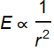 and 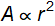
Multiple Choice
1) The electric field on the surface of a 10 cm diameter sphere is perpendicular to the spheres surface and everywhere on the surface has a magnitude of 47 kN/C. What is the electric flux through this sphere: a) 5.91E3, b) 1.46E3, c) 2.95 E3, or d) 0.0314 , 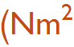/C).
Answer: B, 1477 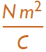
Gauss’s Law: Φ=E·A
where 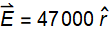 and 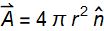
and because the surface is a sphere 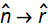
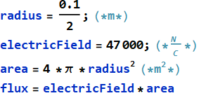
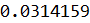

2) You make electric field measurements all at 3 m from an unknown electric charge. These measured electric fields are everywhere radially outwards with the same magnitude of 4.4 kN/C. The unknown charge is therefore: a) 4.40E-6, b) 2.10E-3, c) 1.47E-6, or d) 4.40E12 C.
Answer: A, 4.40E-6 C
Gauss’ Law: 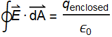
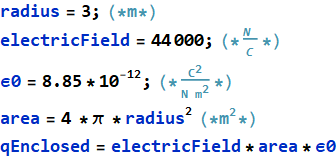
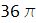
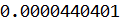

Useful Exercises
1) Draw a sketch of the field lines associated with two charges close together with charges of +2Q and the other -1Q. Use 8 field lines per Q.
Answer: Why do this by hand?
Check out PhET Simulations at https://phet.colorado.edu/en/simulations/category/physics
Can I make my own vector plot?
Let Q=1, k=1
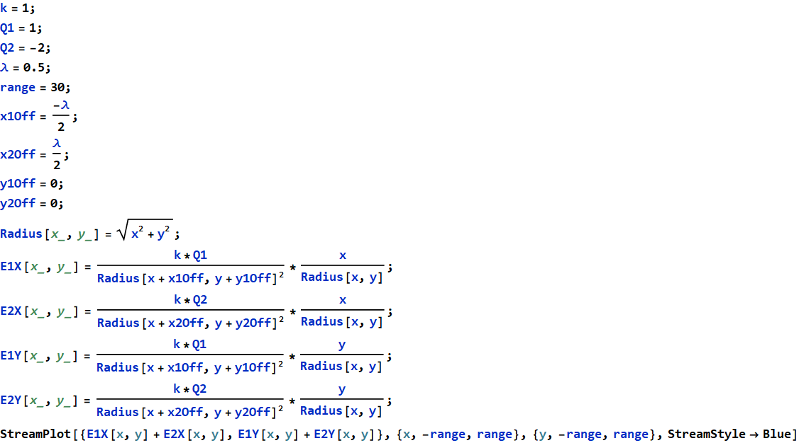
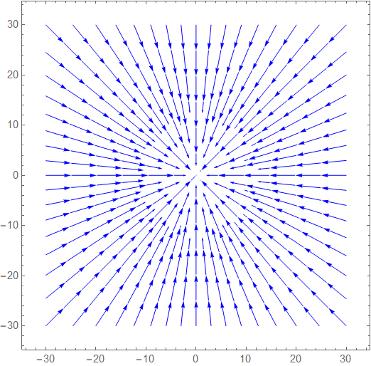
2) Your electric flux meter has an area of 0.05 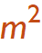 and is held perpendicular to a 19.7 μC charge located at the origin. What will be the measured electric flux at a distance of a) 30 cm, b) 3 m, and c) 30 m.
Answer: a) 98390 b) 984  c) 9.84
c) 9.84 
Gauss’ Law: 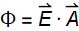
Electric Field: 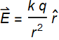
ASSUMPTION: 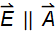
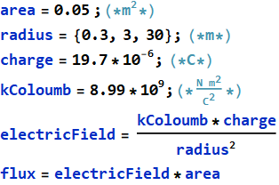
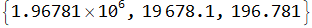
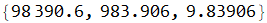